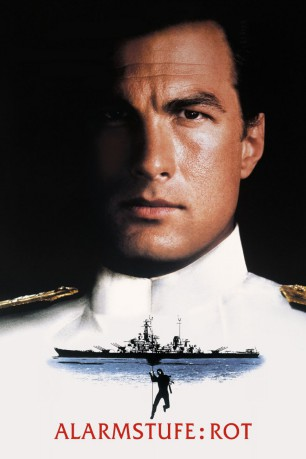
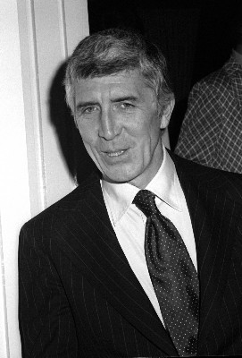

#1888 Alarmstufe: Rot
Auszeichnungen: für 2 Oscars nominiert
 
 IMDB-Wertung: 6.5 / 10
IMDB-Wertung: 6.5 / 10  Metascore: 58
Metascore: 58 
Das amerikanische Kriegsschiff USS Missouri befindet sich auf seiner letzten Fahrt. Die Mannschaft trifft die letzten Vorbereitungen für eine Überraschungsfeier anlässlich des Geburtstags von Captain Adams. Es wurde sogar eine Band organisiert, doch wie sich schon bald herausstellen soll, will es der “Sänger” Strannix nicht nur musikalisch kräftig rocken lassen. Zusammen mit dem abtrünnigen Offizier Commander Krill bringt er das Schiff inklusive atomarer Langstreckenwaffen unter seine Kontrolle. Dabei hat er jedoch nicht mit dem Schiffskoch Casey Rybeck gerechnet, der als Ex-Navy-Seal den Terroristen das Leben schwer macht…
Jahr: 1992
Dauer: 103 Minuten
FSK: 18
Land: Frankreich Studio: Warner Bros.Tonspuren: DD5.1 - ,
Untertitel:
Auflösung: 1080p (1920x1080) Größe: 8744 MB
Genre: Action, Thriller
Regisseur: Andrew Davis
Drehbuch: J.F. Lawton
Soundtrack: Gary Chang
Darsteller:
 Steven Seagal als Casey Ryback
Steven Seagal als Casey Ryback- Damian Chapa als Tackman
 Troy Evans als Granger
Troy Evans als Granger- David McKnight als Flicker
-  Patrick O'Neal als Captain Adams
 Gary Busey als Commander Krill
Gary Busey als Commander Krill Glenn Morshower als Ensign Taylor
Glenn Morshower als Ensign Taylor Bernie Casey als Commander Harris
Bernie Casey als Commander Harris Raymond Cruz als Ramirez
Raymond Cruz als Ramirez Tommy Lee Jones als William Strannix
Tommy Lee Jones als William Strannix- Erika Eleniak als Jordan Tate
 Colm Meaney als Daumer
Colm Meaney als Daumer Richard Andrew Jones als Pitt
Richard Andrew Jones als Pitt- Tom Reynolds als Wave
 George Cheung als Commando
George Cheung als Commando- Craig Dunn als Commando
- Daniel Dupont als Commando
 Frank Ferrara als Commando
Frank Ferrara als Commando- Tom Wood als Private Nash
 Ousaun Elam als Marine
Ousaun Elam als Marine- Peewee Piemonte als Marine
 Conrad E. Palmisano als Strike Team Leader
Conrad E. Palmisano als Strike Team Leader- Luis J. Silva als Luigi
- Michael Des Barres als Domiani
- Nick Mancuso als Tom Breaker
- Joseph R. John als Chief of Staff
 Dennis Lipscomb als Trenton
Dennis Lipscomb als Trenton Dale Dye als Captain Garza
Dale Dye als Captain Garza- E. Daniel Corte Jr. als CIA Aide
- George Bush als Himself - Aboard USS Missouri , archive footage, uncredited
 Bennett Wayne Dean Sr. als Air Force Colonel , uncredited
Bennett Wayne Dean Sr. als Air Force Colonel , uncredited- Edmund Druilhet als Commando , uncredited
- Tom Druilhet als Cajun Sailor , uncredited
- Jamie Gliddon als Marine , uncredited
 John Laughlin als Zix , uncredited
John Laughlin als Zix , uncredited- Kevin Wayne als Submarine Terrorist , uncredited
- Lee Hinton als Cue Ball
- Leo Alexander als Lt. Smart
- John Rottger als Commander Green
- Brad Rea als Marine Guard
- Michael Welden als Lt. Ballard
- Rickey Pierre als Kitchen Helper
- Duane Davis als Johnson
- Eddie Bo Smith Jr. als Shadow
- Tom Muzila als Cates
- Kirk Burroughs als Commando
- Jim Chimento als Commando
 Adam James als Commando
Adam James als Commando- Michael Gaylord James als Commando
- Miguel Nino als Commando
Datei: X:\FSK18-Collections\Alarmstufe Rot\Alarmstufe Rot (1992, FSK18, 1920x1080).mkv seit 31.08.2015
Festplatte: FSK18
 Alle Filme aus Gruppe 'FSK18-Collections\Alarmstufe Rot'
Alle Filme aus Gruppe 'FSK18-Collections\Alarmstufe Rot'